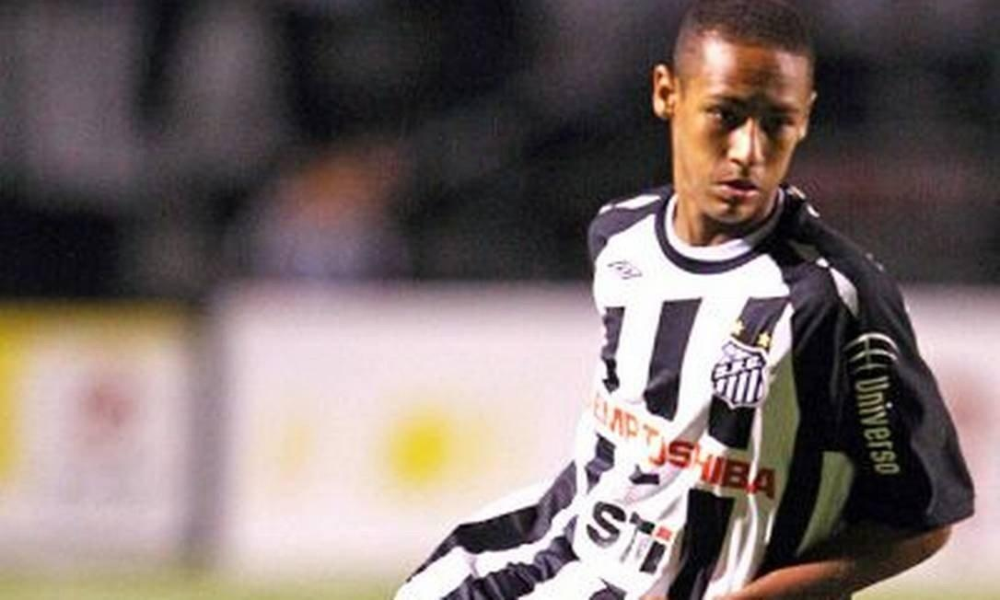

Aqui irei compartilhar algumas imagens de momentos marcantes e únicos da carreira de um jogador amado por muitos, mas também é alvo de bastante críticas. Imagens de seu sucesso em campo, mas também algumas controvércias e desafios enfrentados ao logo de seu caminho. Fotos que revelam a complexidade e o impacto de seu talento no futebol mundial.

Neymar em seu inicio de carreira pelo Santos Futebol Clube.
No início de 2012, ocorreu o evento FIFA Ballon D'or 2011, aonde nosso menino Ney conquistou o prêmio de gol mais bonito do ano, o prêmio FIFA Ferenc Puskás.
Imagem do belíssimo gol Puskás de Neymar, Marcado contra o Flamengo em 27 de julho de 2011, válido pela 12º rodada do campeonato brasileiro.
Em 30 de Junho de 2013, Neymar conquista seu primeiro título pela seleção brasileira. Brasil campeão da Copa das Confederações, após uma vitória na final sobre a seleção das Espanha por 3x0.
Pouco após a conquista da Copa das Confederações, no dia 3 de junho de 2013, Neymar foi apresentado pelo Barcelona. Em 28 de agosto do mesmo ano, Neymar já conquistava seu primeiro título pelo seu novo clube, a Supercopa da Espanha.
Em 2014, tivemos a Copa do Mundo sediada no Brasil. Este evento foi marcante para Neymar, que representou a seleção brasileira com destaque e expectativas elevadas.
No entanto, sua participação foi interrompida devido a uma lesão durante as quartas de final contra a Colômbia. Neymar teve uma fratura na vértebra lombar e ficou dois meses longe dos gramados. A ausência de Neymar pelo restante da Copa do Mundo teve um impacto significativo na equipe, refletindo-se na histórica derrota por 7x1 para a Alemanha nas semifinais, seguida por outra derrota na disputa pelo terceiro lugar contra a Holanda, por 3x0.
Em 2016, no Rio de Janeiro, Neymar conquistou mais um feito importante pela seleção brasileira: o primeiro ouro olímpico da nossa seleção. A conquista veio após uma final tensa contra a Alemanha, que terminou em empate por 1x1, com Neymar decidindo na última cobrança de pênalti.
Em 2017, Neymar deixou o Barcelona para se juntar ao Paris Saint-Germain, mas deixou uma marca indelével na memória de todos os fãs de futebol. Sua passagem pelo Barcelona foi marcada por lances maravilhosos, gols espetaculares e uma conexão mágica com seus companheiros Messi e Luis Suárez. Na minha opinião, o trio MSN foi o melhor já visto, proporcionando um estilo de jogo envolvente e incrível de se assistir. Neymar era admirado por sua habilidade técnica excepcional, velocidade impressionante e capacidade de driblar com maestria os adversários. Sua criatividade no campo, aliada à visão de jogo e precisão nos passes, o destacava como um dos jogadores mais talentosos de sua geração. Além disso, sua capacidade de marcar gols decisivos em momentos cruciais e sua contribuição para o jogo coletivo do Barcelona eram frequentemente elogiadas. Sua parceria com Lionel Messi e Luis Suárez na frente de ataque formou um dos trios mais temidos e produtivos da história do futebol, contribuindo significativamente para os sucessos do Barcelona em competições nacionais e internacionais.
Em 5 de agosto de 2017, Neymar foi apresentado pelo PSG, onde permaneceu até 2023. Durante sua passagem pelo clube, Neymar disputou 173 jogos, marcando 118 gols e contribuindo com 70 assistências. Ao longo desses anos, conquistou 13 títulos, todos de âmbito nacional. No entanto, sua trajetória no PSG não alcançou o mesmo brilho de sua passagem pelo Barcelona. Apesar de chegar a uma final da UEFA Champions League, Neymar também enfrentou desafios com lesões recorrentes.
Em 19 de agosto de 2023, Neymar foi apresentado pelo Al-Hilal. Com apenas cinco jogos pela equipe, sua trajetória foi abruptamente interrompida em 17 de outubro de 2023, durante uma partida pela seleção brasileira contra o Uruguai pelas eliminatórias da Copa do Mundo, quando sofreu uma lesão grave. Neymar rompeu o ligamento cruzado anterior e o menisco do joelho esquerdo, o que até então, o deixou afastado dos gramados por quase seis meses.
Hoje, aos 32 anos de idade, Neymar encontra-se afastado do futebol devido à sua lesão. Frequentemente envolvido em polêmicas, sua presença constante em festas e eventos tem deixado o povo brasileiro desacreditado de seu comprometimento com o esporte, levando alguns a até o chamarem de "aposentado".
Apesar de tudo, ainda há uma esperança pelo menos para o torcedor santista. Ultimamente vem crescendo os boatos sobre a possível volta de Neymar para o Santos.